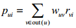
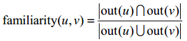
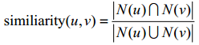
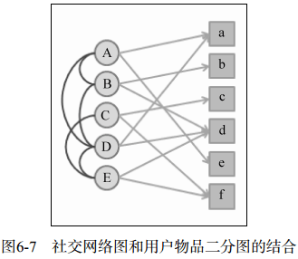
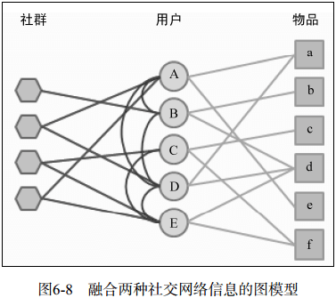
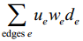

一、 利用社交网络数据
1. 获取社交网络数据的途径
(1) 电子邮件
(2) 用户注册信息
(3) 用户的位置数据
(4) 论坛和讨论组
(5) 即时聊天工具
(6) 社交网站（囊括了社交网络的两种基本类型）
a. 社交图谱：Facebook，基于各种关系，关系双向。
b. 兴趣图谱：Twitter，基于兴趣、信念，单向关注。
二、 社交网络数据简介
1. 用图来定义社交网络：G(V,E,w)。
V：顶点，代表用户。
E：边，代表关系。
w：权重，代表关系的程度。
（双向关系（社交图谱）用无向图，单向关系（兴趣图谱）用有向图。）
定义in(u)和out(u)为关注用户u的人数和用户关注的人数。
一般把社交网络数据分为三种：双向确认的；单向确认的；基于社区的（可能是兴趣度相似或者其他）；
2. 社交网络数据中的长尾分布
在一个社交网络中，用户的入度和出度的衡量统计。
a. 入度分布图呈长尾状，则可以说明在这个社交网络中影响力大的用户占少数；
b. 出度分布图呈长尾状，则可以说明在这个社交网络中绝大多数用户只关注很少的人。
三、 基于社交网络的推荐
1. 优点缺点
a. 好友推荐可以增加推荐的信任度。
b. 社交网络可以解决冷启动的问题。
a. 不一定能提高算法的离线精度（准确率和召回率）。
2. 基于邻域的社会化推荐算法
算法是根据与好友的相似度和熟悉度来衡量本用户是否喜欢某物品的。
推荐公式：

pui：用户u对物品i的兴趣。
wuv：用户u和用户v的熟悉度familiarity(u,v)和兴趣相似度similiarity(u,v)。
rvi：如果用户v喜欢物品i，则该值为1，不喜欢则为0。
out(v)：用户u的出度（用户u关注的好友）。
familiarity(u,v)：

similiarity(u,v)：

3. 基于图的社会化推荐算法
社交网站中存在两种关系：用户对物品的兴趣、用户之间的社交网络关系。
本算法致力于将这两种关系建立到图模型中，从而实现对用户的个性化推荐。
(1) 用户-用户之间的推荐

圆圈代表用户，方块代表物品，这个二分图同时表示了用户-用户之间与用户-物品之间的关系，在此基础上对每条边加以权重和自定权重（α、β），就可以利用比如PersonalRank之类的图排序算法给每个用户生生推荐结果了。
(2) 社群用户之间的推荐

加入了社群中用户的关系membership，参考上面以图的方式来利用member之间的关系。
4. 实际系统中的社会化推荐算法
(1) 基于领域的算法中存在的问题
a. 要操作的数据异常多（跟用户有关的所有用户和物品），对数据库的读写提出了很高的要求。
b. 大量数据对处理效率提出了要求，要实时性（数据频繁更新）就要牺牲效率。
(2) 解决方案
a. 治标方案
对数据进行topN筛选；
降低缓存中用户行为列表过期的频率，牺牲实时性。
b. 治本方案
重新设计数据库，为每个用户维护一个消息队列，装着这个用户的好友的实时消息（微博）。
(3) 治本方案的实现设想
a. 为每个用户维护一个消息队列，用户存储他的推荐列表
b. 每当一个用户喜欢一个物品时，就像这条记录写入关注该用户的推荐列表消息队列中。（这样会造成频繁读写少量数据，但就避免了一下子读入大量数据）
c. 当用户访问推荐系统时，根据消息队列中的的物品来计算它们的权重、相似度、熟悉度等参数，进行推荐和推荐解释（即把好友也列出来）。
5. 社会化推荐系统和协同过滤推荐系统
社会化推荐的优势不在于增加预测准确度，而是在于通过用户的好友增加用户对推荐结果的信任度，从而让用户单击那些很冷门的推荐结果。
所以虽然社会化推荐系统的离线测评（准确率和召回率）无法获得很好的预测效果，但也不会妨碍对于社会化推荐的判断。相反，很多研究人员利用用户调查和在线实验的方式评测社会化推荐系统。
a. 两种系统的离线测评结果：George Groh和Christian Ehmig的工作。
b. 两种系统的用户调查结果：Rashmi Sinha和Kirsten Swearingen的工作。
（书中阐述了一个使用用户调查的方法的实验，获得的结果是：好友推荐结果的用户满意度明显高于基于协同过滤的亚马逊推荐系统。但作者也承认实验存在一些漏洞，不要过分依赖，应该在自己的系统进行AB测试，得到最客观的答案。）
6. 信息流推荐
信息流的个性化推荐就是要解决如何进一步帮助用户从信息墙上挑选有用的信息的问题。
(1) Facebook的EdgeRank
该算法综合考虑了信息流中每个会话的时间、长度与用户兴趣的相似度。Facebook将其他用户对当前用户信息流中的会话产生过行为的行为成为edge，一条会话的权重定义为：

ue：产生行为的用户和当前用户的相似度，这里的相似度主要是在社交网络图中的熟悉度。
we：指行为的权重，这里的行为包括创建、评论、喜欢、打标签等，不同的行为有不同权重。
de：时间衰减参数，越早的行为对权重的影响越低。
上式表明：如果一个会话被你熟悉的好友最近产生过重要的行为，它就会有比较高的权重。
这种算法的缺点就是只考虑了“我”周围用户的社会化兴趣，而没有重视“我”个人的个性化兴趣，为此，GroupLens的研究人员Jilin Chen深入研究了信息流推荐中社会兴趣和个性化兴趣之间的关系，在用户调查实验中，他们考虑了如下因素：
a. 会话的长度
b. 话题相关性
c. 用户熟悉程度
实验的结果表明：综合考虑用于的社会兴趣和个人兴趣对于提高用户满意度是有帮助的。
因此，在社交网站中设计推荐系统时，可以综合考虑这两个因素，找到最合适的参数来融合用户的社会兴趣和个人兴趣，从而给用户提供最令他们满意的推荐结果。